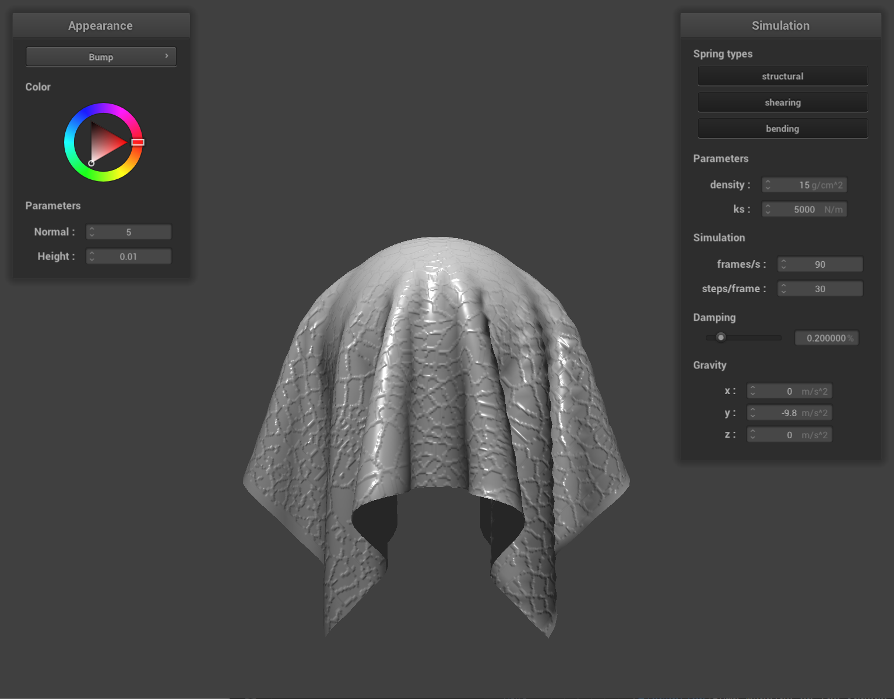
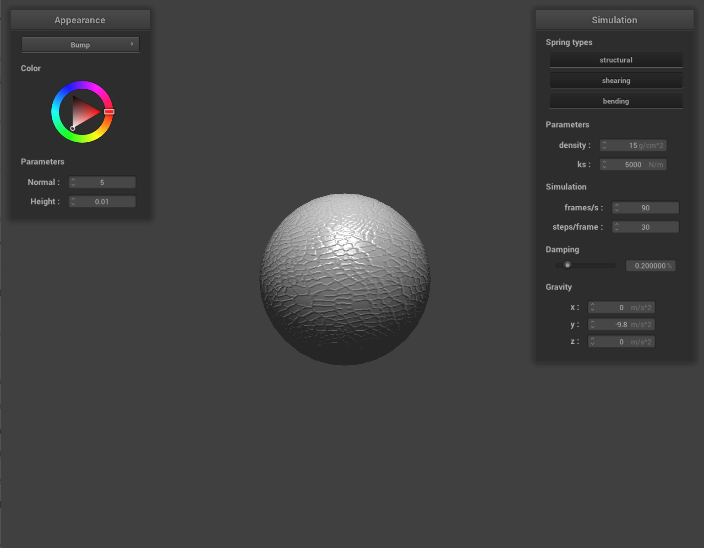

CS 184/284A: Computer Graphics and Imaging, Spring 2024
Project 4: Cloth Simulator
Jeremy Chen
Overview
This project delves into simulating cloth behavior through constructing its structure with masses and springs, numerically integrating the simulation while adjusting parameters like spring constant, density, and damping to observe their effects on the cloth's behavior, handling collisions with spheres and planes, addressing self-collisions within the cloth simulation using spatial hashing, and implementing shaders for rendering realistic material appearances. Through these stages, the project provides a deep exploration into the intricacies of cloth simulation, collision detection, and rendering techniques, offering insights into the complex interplay between physics simulation and visual representation in computer graphics.
Part 1: Masses and springs
At the beginning of the project, we construct a grid of point masses representing the cloth's structure by iteratively
creating masses at each grid point and establishing springs between neighboring masses to simulate structural,
shearing, and bending constraints. We calculate the spacing between point masses based on the cloth's dimensions and
orientation, with vertical orientation introducing random offsets for variation. Pinned masses are identified and
fixed in place, while springs are generated to enforce constraints between point masses, considering their relative
positions in the grid. This systematic approach lays the foundation for simulating the cloth's behavior and facilitates
accurate rendering in subsequent stages of the simulation.
Take some screenshots of scene/pinned2.json from a viewing angle where you can clearly see the cloth wireframe
to show the structure of your point masses and springs.
The wireframe (1) without any shearing constraints,
(2) with only shearing constraints, and (3) with all constraints.
|
No shearing constraints
|
Only shearing constraints
|
 All constraints
All constraints
|
Part 2: Simulation via numerical integration
Experiment with some the parameters in the simulation.
To do so, pause the simulation at the start with P, modify the values of interest, and then resume by pressing P again.
You can also restart the simulation at any time from the cloth's starting position by pressing R.
1. Describe the effects of changing the spring constant ks; how does the cloth behave from start to rest with a very low ks?
A high ks?
When the spring constant (ks) is very low, the cloth exhibits a highly malleable and soft behavior. This is because the springs connecting the point masses are less stiff, allowing for more flexibility and deformation in response to external forces such as gravity. As a result, the cloth falls slowly and forms gentle. The deformations are more pronounced, and the cloth spreads out widely, with the folds appearing loose and soft. Conversely, when the spring constant is high, the cloth behaves with increased rigidity and stiffness. The springs exert stronger forces, leading to less deformation and a faster falling speed.
|
ks = 50 N/M
|
Default Parameters (ks = 5000 N/M)
|
ks = 50000 N/M
|
2. What about for density?
Adjusting the density parameter in the cloth simulation influences how the cloth responds to external forces, particularly gravity. Increasing the density means adding more point masses to the cloth, effectively increasing its overall mass per unit area, results in a stronger gravitational force acting on the cloth. Conversely, decreasing the density reduces the number of point masses in the cloth, resulting in lower overall mass per unit area. The deformation of the higher density cloth is larger than the deformation of the lower density cloth. Adjusting the density parameter in the cloth simulation affects the behavior of the cloth in a similar manner to decreasing the spring constant.
|
d = 1 g/m^2
|
Default Parameters (d = 15 g/m^2)
|
d = 100 g/m^2
|
3. What about for damping?
The effect of damping to the final resting state is mostly about the time. From the images and the timing information below, we can see the cloth with lower damping rate falls faster to the final resting state.
Reducing the damping rate would speed up the simulation since there's less resistance to slow it down.
|
Default Parameters (damping = 0.2%) at 1s
|
damping = 0.6% at 1s
|
damping = 1.0% at 1s
|
|
|
Default Parameters, 6s to final resting state
|
damping = 0.6%, 25s to final resting state
|
damping = 1.0%, 55s to final resting state
|
|
Show us a screenshot of your shaded cloth from scene/pinned4.json in its final resting state!
If you choose to use different parameters than the default ones, please list them.
shaded cloth from scene/pinned4.json in its final resting state
(Normal Shading)
|
shaded cloth from scene/pinned4.json in its final resting state
(Phong Shading)
|
Part 3: Handling collisions with other objects
In handling collisions with both spheres and plans, the approach involves determining whether a point mass intersects with or is inside
the respective primitive. For spheres, we check if the point mass is inside the sphere by comparing its distance to the sphere's radius,
adjusting its position to the tangent point on the sphere's surface if needed. On the other hand, for planes, we compute the intersection
point with the plane if the point mass crosses over it, then correct the point mass's position to remain above the plane's surface.
Both collision mechanisms account for friction and ensure that the cloth interacts realistically with both spherical and plane objects.
Show us screenshots of your shaded cloth from scene/sphere.json in its final resting state
on the sphere using the default ks = 5000 as well as with ks = 500 and ks = 50000.
|
ks = 500
|
Initial configuration (ks = 5000)
|
ks = 50000
|
|
Describe the differences in the results.
When the spring constant ks in Hooke's law varies, it directly affects the stiffness or rigidity of the spring. When ks = 50000,
it corresponds to a stiffer spring, meaning it requires more force to deform the spring by a certain amount. As ks​ increases,
the spring (cloth) becomes less compliant, resisting deformation more strongly and exerting greater restorative force to return
to its equilibrium position. On the other hand, ks = 500 indicates a softer spring (cloth), which deforms more easily for a given
force and exerts less restorative force.
Show us a screenshot of your shaded cloth lying peacefully at rest on the plane.
If you haven't by now, feel free to express your colorful creativity with the cloth!
(You will need to complete the shaders portion first to show custom colors.)
|
Phong Shading
|
Texture Shading - Photo of Lake Tahoe Taken by Me
|
|
Part 4: Handling self-collisions
In this part, we addressed self-collisions within the cloth simulation by implementing spatial hashing. To efficiently handle collisions,
we divided the 3D space into a grid of discrete 3D boxes and assigned each point mass to a box based on its position. This allowed us to
significantly reduce the number of pairwise collision checks by limiting them to point masses within the same box. We implemented the hash_position
method to map each point mass's position to a unique float identifier representing its box, and then built a spatial map using this hash to organize
point masses by box. The self_collide method was introduced to compute collision corrections between a point mass and nearby candidates within
the same box, aggregating correction vectors and applying them to the point mass. This process was optimized by scaling the correction vector
with simulation steps and ensuring the exclusion of self-collisions. Finally, we updated our cloth simulation method to check for self-collisions.
These enhancements improved the efficiency and accuracy of self-collision detection within the cloth simulation.
Screenshots document how the cloth falls and folds on itself,
starting with an early, initial self-collision
and ending with the cloth at a more restful state (even if it is still slightly bouncy on the ground).
Default density = 15 g/cm^2, ks = 5000 N/M
|
Self collision 1
|
Self collision 2
|
 Self collision 3
Self collision 3
|
|
Vary the density as well as ks
and describe with words and screenshots how they affect the behavior of the cloth as it falls on itself.
(1) Vary the density (density = 1 g/cm^2 and density = 50 g/cm^2) while keeping the ks constant
With lower density, the cloth is lighter and falls more slowly. It shows fewer wrinkles upon lending, forming gentle and
flowing folds. The cloth spreads out relatively widely at a more restful state, with the folds appearing soft and loose.
On the other hand, higher density makes the cloth heavier, resulting in faster falling speed and greater inertia. The cloth
shows more wrinkles upon landing. Folds are sharper and more compact, with less spreading at a more restful state.
|
density = 1
|
density = 1
|
density = 1
|
|
density = 50
|
density = 50
|
density = 50
|
(2) Vary the ks (ks = 500 N/M and ks = 30000 N/M) while keeping the density constant
With a lower spring constant, the cloth's springs are less stiff, allowing for more flexibility and deformation upon impact.
As the cloth falls, it deforms easily. When it lands on itself, the cloth overlaps more. Conversely, a higher spring constant
results in stiffer springs, leading to reduced flexibility and deformation. The cloth falls with less deformation,
maintaining a more rigid structure. Upon landing, the cloth retains its original square shape relatively well.
 ks = 500
ks = 500
|
ks = 500
|
ks = 500
|
|
ks = 30000
|
ks = 30000
|
ks = 30000
|
Part 5: Cloth Sim
Explain in your own words what is a shader program and how vertex and fragment shaders work together to create lighting and material effects.
A shader program is a set of isolated programs that run in parallel on the GPU, handling specific tasks within the graphics pipeline to render
realistic material appearances efficiently. There are two main types: vertex shaders and fragment shaders. The vertex shader takes in vertices
of 3D objects and manipulates their geometric properties, such as position and normal vectors, to transform the scene into normalized device
coordinates. It then outputs varying data, including transformed positions, normals, and UV coordinates, to be used by the fragment shader.
The fragment shader, on the other hand, takes in geometric attributes of individual fragments (or pixels) and computes the final color for each
pixel. It interpolates values based on the varying data received from the vertex shader to fill in the remaining pixels between vertices,
producing different material effects. Together, the vertex and fragment shaders work seamlessly to handle different aspects of lighting and
material rendering, ultimately creating visually compelling graphics.
Explain the Blinn-Phong shading model in your own words.
Show a screenshot of your Blinn-Phong shader outputting only the ambient component, a screen shot only outputting the diffuse component, a screen shot only outputting the specular component, and one using the entire Blinn-Phong model.
The Blinn-Phong shading model is a technique used to approximate lighting in computer graphics. It considers three main types of light contributions:
ambient, diffuse, and specular reflections. Ambient light represents the uniform background illumination present in a scene. Diffuse lighting accounts
for how the surface of an object interacts with light, with surface normals pointing towards the light source appearing brighter. Specular reflection,
on the other hand, produces highlights or glare on glossy materials, depending on the position of the light source, surface normal, and viewer. By
combining these three types of lighting contributions using weighted sums, the Blinn-Phong model can simulate the appearance of various materials
with reflective properties.
|
Ambient component only
|
Diffuse component only
|
|
Specular component only
|
Complete Blinn-Phong model
|
Showing a screenshot of the texture mapping shader using my own custom texture by modifying the textures in /textures/.
Show a screenshot of bump mapping on the cloth and on the sphere.
Show a screenshot of displacement mapping on the sphere.
Use the same texture for both renders.
You can either provide your own texture or use one of the ones in the textures directory,
BUT choose one that's not the default texture_2.png.
Compare the two approaches and resulting renders in your own words.
Compare how the two shaders react to the sphere by changing the sphere mesh's coarseness by using -o 16 -a 16 and then -o 128 -a 128.
Bump mapping perturbs normals while displacement mapping perturbs positions. The comparison between bump mapping and displacement mapping on a
sphere's texture reveals significant differences in their performance based on sampling rates. At a lower sampling rate, such as 16x16, bump
mapping appears to yield better results. This is because displacement mapping, with its sparse sampling, leads to blockiness in the texture due
to the interpolation of physical height perturbations across the surface. The texture's high-frequency content cannot be faithfully reproduced
by the limited surface displacements. Conversely, at a higher sampling rate like 128x128, displacement mapping excels in accurately depicting
both the texture's shading nuances and the physical deformations on the sphere, showcasing a more refined and detailed appearance.
|

Bump Mapping on the Cloth
|

Bump Mapping on the Sphere
|
|
|
Bump Mapping on the Sphere (resolution 16x16)
|
 Bump Mapping on the Sphere (resolution 128x128)
Bump Mapping on the Sphere (resolution 128x128)
|
|
|
Displacement Mapping on the Sphere (resolution 16x16)
|
Displacement Mapping on the Sphere (resolution 128x128)
|
|
A screenshot of my mirror shader on the cloth and on the sphere.
|
Mirror Shader on the Cloth
|
Mirror Shader on the Sphere
|
|